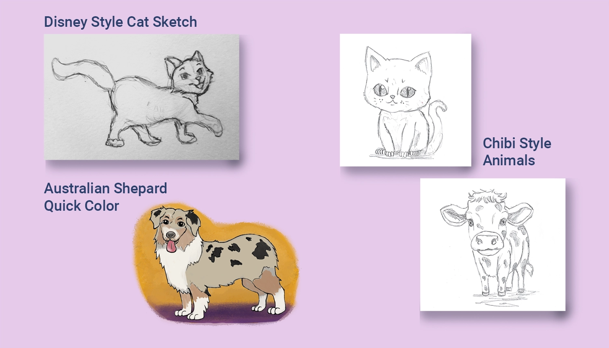

My Role:
- Book Design and Layout
- Illustrations
- Typing of Sanskrit
Client:
- Vickrant Puri
Year:
- 2020
About:
This was a project I undertook for a client interested in creating a children's book focused on teaching young English-speaking children the basics of Nepalese. The client, originally from Nepal, is now a second-generation American, and he noticed a lack of children's books aimed at teaching Nepali to young children. Although it's been a fascinating project, it's currently on hiatus. The client is working on securing financing and additional translation support to ensure the accuracy of the Sanskrit content. Currently, the project consists of a sample featuring four simple words and a basic page layout, awaiting approval to continue the design process.
Challenges:
Aside from spending some time figuring out a style for the four initial words, the main challenge was getting the Sanskrit into Adobe InDesign. Unfortunately, unlike Microsoft Word or Google, which allows you to copy-paste Sanskrit text, Adobe required a font pack and the Nepali language to be installed into Microsoft. The biggest challenge was then using an English keyboard to try and create the proper Sanskrit characters on the page. I created a Keyboard Shortcut List that helped me recreate and type the proper characters into each entry, but it's a slow process that, if I were working on an entire book, I would try to streamline.
WORK FLOW
| Pencil & Paper | Basic character designs. |
| Photoshop | Finalized illustrations and coloring. |
| Adobe Indesign | Book page layout and design. Typing of sankrit words. |
| Canva & Photoshop | Creation of a couple mockups. |

Design Process
Scroll down to view the work flow process for the project.
Animal Sketches:
The first step, as I was going to be illustrating this project, was to try and determine the style of the artwork for the book. I had never done any artwork specifically for young children before, so I spent some time looking at various children's books and other cartoon characters from various mediums. The first animal I drew that I liked was a cat; it was in what I considered a Disney style of animation, and I used it in the first template for the book layout. Following that, I also drew an Australian Shepherd that I liked and started digitizing and coloring it to give the client a better idea of what the characters could look like. I also experimented with a watercolor-style backdrop that I felt would look good and make the characters pop off the page.
After the dog, I continued looking at children's books for kids in the age range of 3 - 6 and thought that although the Disney style characters were cute, they might end up more detailed than I wanted and not appeal as much to very young kids. I finally thought about Japanese chibi style artwork where the heads and eyes are exaggerated and felt that a style like that might better draw attention to younger readers. So, I came up with several variations of chibi style artwork for each of the animal examples that I had.
Nepali Alphabet:
One of the funny challenges with this project was that due to how Adobe Indesign handles fonts, I couldn't simply copy-paste text from the Word documents provided by the client. I ended up having to learn a bit about the Nepali Sanskrit Alphabet in order to type the correct characters into the book layout.
In the example above, Dog in Nepalese is pronounced as (ku - kur) in English. To spell it in Sanskrit, you need to take the consonant [ka] and attach it to the vowel [u] to create a [ku] sound. So the final Sanskrit character is a combination of both or written as an expression:
क + उ = कु
The second part [kur] is similar to the first but, with the [ra] sound added at the end, or written:
क + उ + र = कुर
After learning how to build the characters the difficulty then came from figuring out how to type that out into InDesign on an English keyboard.
Mapping Nepali on an English Keyboard:
I spent some time mapping out the Sanskrit character keys and sounds to the actual keys I needed to press on the keyboard. However, it still became a game of trying to figure out what combination of keys gave me the sound I wanted. To use the example of the Dog from above, the word कुकुर is created by typing the English combination of S + ', then S + ' + / in order to type the word into InDesign.
Maybe if this project picks up again, I'll spend some time researching a better way to accomplish this task; however, for the four words I used in the prototype layouts, I felt this was enough to get the job done.
First Spread Design:
This was the first example page I created for the client to get an idea of what the book could look like. The initial concept revolved around the creation of simple blocks of color that would organize each page into a 2 x 2 table, providing ample space for visuals and large letters for children to read. Additionally, there was a top bar designed to hold page categories, enhancing the organization of the book as readers progressed. I envisioned using different color themes for each category, making it easy for a child to find the section of pictures they wanted to explore.
Alternate Spread Design:
Here's a quick alternate idea I had for the layout if each page spread had a custom theme. With this setup, I could create background artwork and place the words and illustrations on tables in the foreground of the page. I also experimented with using the alphabet itself as a visual pattern for the background, but that's another detail that could easily be changed. In any case, I thought it would be nice to present another way of stylizing the book if the client is interested.
Mockups of Childrens Book:
To help sell the idea and assist the client in visualizing the finished product, I created my own mockups in Photoshop using the only square book I could find, which was 9x9. It was close enough to demonstrate what the final 8x8 square children's book could look like. On a positive note, I discovered why mockup generator websites are such a nice thing to quickly use – because taking the time to custom distort and warp images is a pain. However, I believe it's worth the effort to showcase the finished product.
Thanks! You've made it through my entire design process,
Click the arrow button on the right to return to the top of the page, click Portfolio to see my selected works, or click Archives and look through other projects.